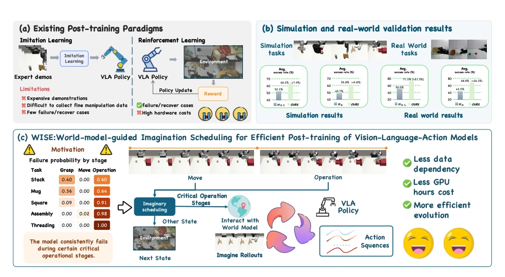
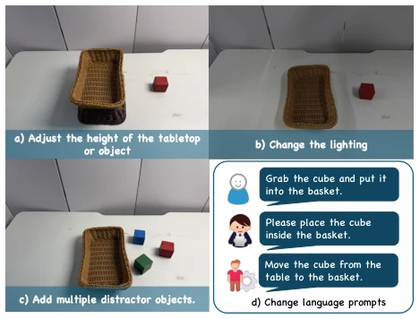
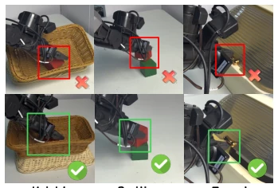
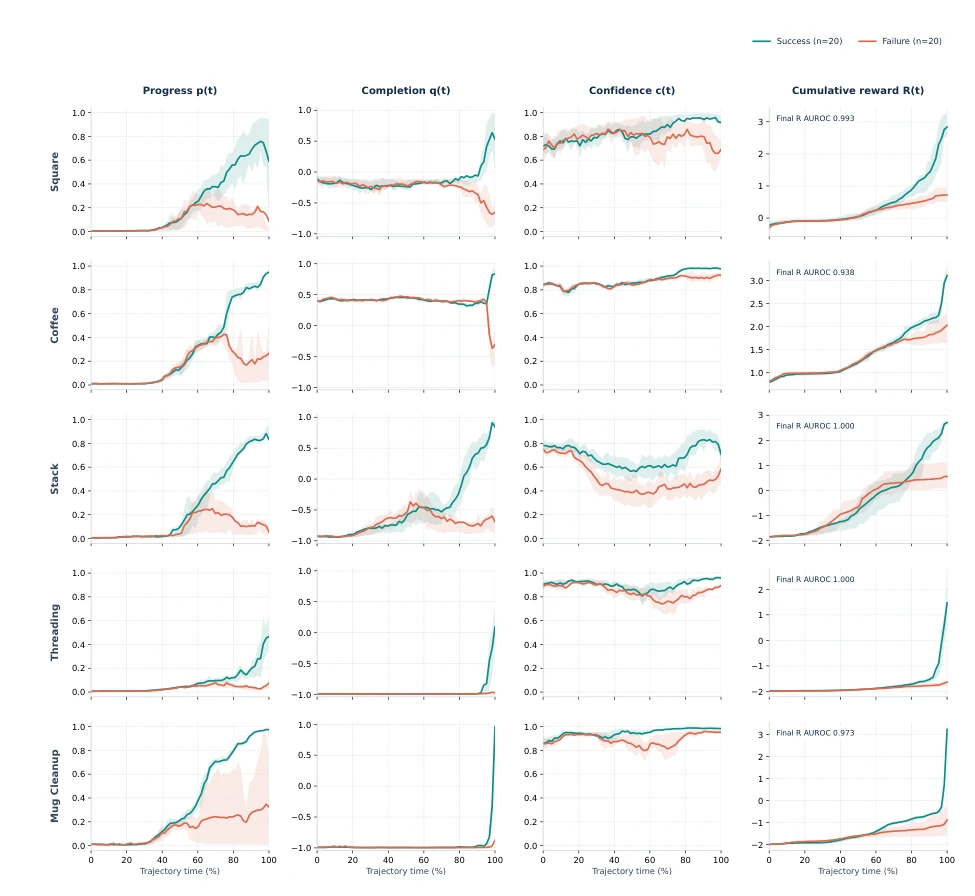
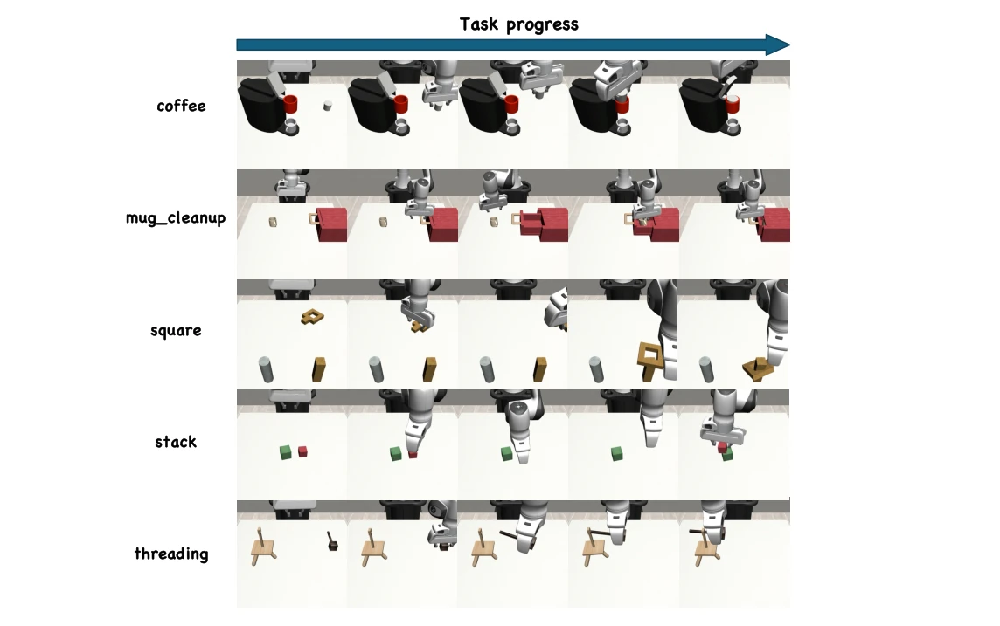
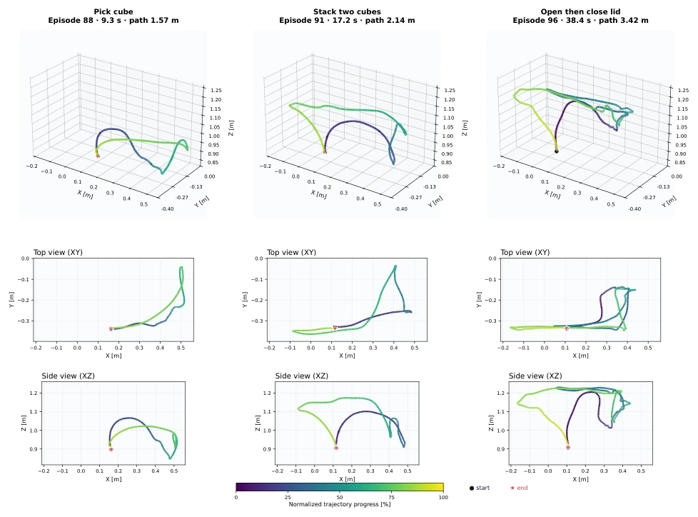
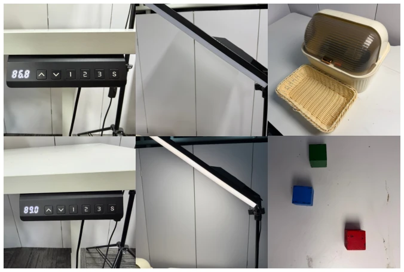

VLA 模型如 π0 (Black et al., 2026) 虽强，但适配特定环境难。现有后训练依赖昂贵专家演示 (Brohan et al., 2023a) 或高风险真实探索 (Shao et al., 2024)。世界模型虽能预测未来，但全量想象会累积误差且浪费计算。关键问题在于：何时想象、想象多远、如何转化信号。现有方法如 WMPO (Zhu et al., 2025) 多关注生成轨迹，忽视分配效率。WISE 旨在解决“盲目想象”的低效与不可靠问题，避免在无关状态浪费算力，同时防止长 horizon 预测误差破坏策略。
—

Figure 1: Motivation and key idea of WISE. Existing VLA post-training methods rely on costly demon- strations or extensive real-world exploration, whereas WISE coordinates world-model imagination to provide efficient and reliable policy-learning signals.
Figure 2: Overview of WISE. Scheduled world-model imagination evaluates candidate actions through bounded imagined futures and converts their relative outcomes into feedback for VLA policy refinement.
Figure 3: Real-world manipulation tasks evaluated on the Galaxea R1 Lite robot: Pick-and-Place, Two-Cube Stacking, Open, and Open-and-Close.

Figure 4: Generalization settings for real-world evaluation. We consider four types of variations in scene geometry, lighting conditions, distractor objects, and language instructions.

Figure 5: Representative failure cases and recov- ery behaviors during real-world manipulation.
其他图片Other Figures

Figure 6: Reward-model scores on five simulated tasks. Green and red indicate successful and failed videos, respectively. Columns show progress p(t), completion q(t), confidence c(t), and cumulative reward R(t). Solid lines denote means; shaded regions indicate interquartile ranges.

Figure 7: Simulation tasks used for evaluation: Coffee, Mug Cleanup, Square, Stack and Threading

Figure 8: Representative right end-effector trajectories for the three real-world tasks on the Galaxea R1 Lite platform. Each column shows the 3D trajectory together with its top-view (XY) and side-view (XZ) projections. Colors indicate normalized task progress from start to completion, while the black circle and red star denote the start and end points, respectively.

Figure 9: Representative real-world generalization settings, including variations in interaction height, lighting conditions, and distractor objects.